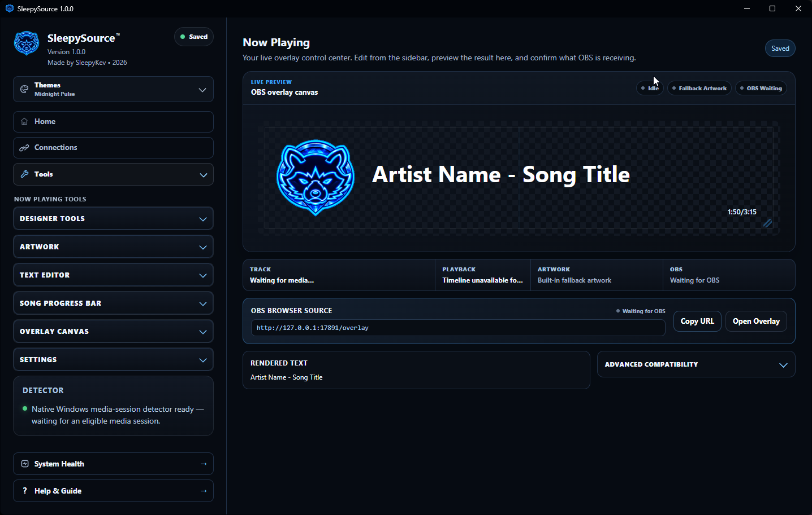

PLATFORMWindows
PRICEFree
FOCUSStreaming tools
OBSBrowser Sources
A Windows streaming toolkit for overlays, alerts, dashboards, OBS Browser Sources, and creator utilities.

Use the tools you need without turning every task into a separate utility.
Keep important stream and connection information visible in one place.
Build browser-source output for OBS, including on-stream visual elements.
Configure and preview alert behavior for supported stream events.
Present chat on stream with styling and layout controls.
Display current media information in a stream-friendly overlay.
Create timers and countdowns for starting screens and stream segments.
Use the SleepyHub support page for troubleshooting steps, reporting guidance, and official project links.